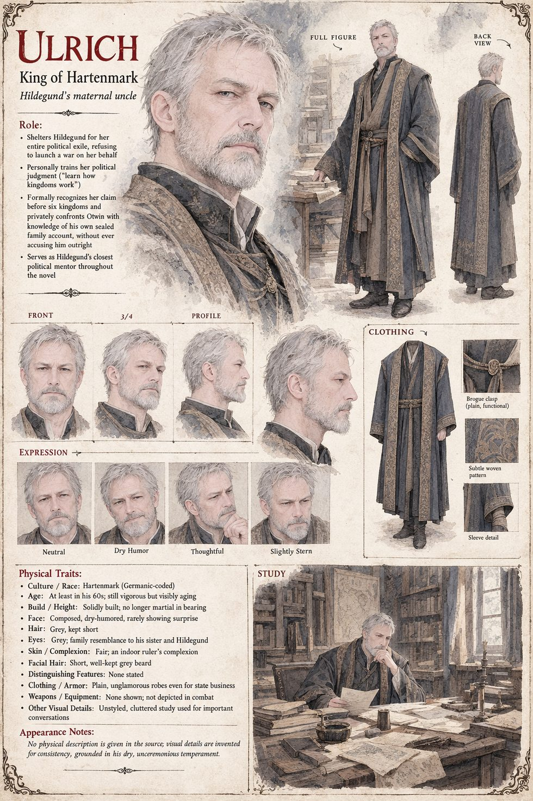

Ulrich
King of Hartenmark, Hildegund's maternal uncle · thirty years on the throne when she arrives · a full treasury guarded like a daughter · keeps an unglamorous study and an unremarkable wine
The king of Hartenmark, a kingdom of grain and ledgers with a walled capital of the same name, a granary office, a merchants' hall and a small, perpetually underfunded university, who has spent thirty years guarding a full treasury as other men guard a daughter, never once being seen to need anything. He has not seen his sister's daughter since she was nine years old and missing her front teeth. He embraces Hildegund before he questions her, which is worth more to her than any number her own blood is capable of producing. His council argues six hours about a war that had in the strictest sense already started three months earlier; he listens to all of it without committing to any of it, and ends the debate with the one exchange the chroniclers preserve word for word, addressed to his niece: You want your kingdom back? Yes. Then learn how kingdoms work. It is, she decides years afterwards, the least comforting and most genuinely loving thing anyone has said to her since the night Vahlreth fell.
He does as he says. Within a month she has a small windowless room off the treasury, a stool and a clerk, Oderic, told on pain of his position to treat her as he would any apprentice, and the muster horns do not sound in Hartenmark that season or the next. He watches her build a faction from the considerable distance a king affords himself for such observations, and identifies what he feels, with the dry precision he once used to end a war council, as pride rather than alarm, though he is careful, being a king, to feel it privately. When the wine fever will not break he forbids the journey to the hermit outright, Every wall in this city exists to keep her alive, and when Reinolt takes her anyway he sends a dozen guards, on the single condition that if his niece means to die disobeying him she does it surrounded by every sword he can spare.
It is his ride to Otwin's own court, five weeks after the Hush, on the pretext of a grain-tariff renewal neither treasury much cares about, that turns the war into an accounting. He speaks to Otwin alone for the better part of an hour and delivers, on his way out of the door, a single sentence, whose wording was Hildegund's: that Hartenmark has decided to recognise his niece's claim before the courts of six neighbouring kingdoms, not as an act of war, which its treasury cannot afford, but as an overdue correction to the historical record, and that a king curious about certain physicians' sealed family accounts should feel free to satisfy it, since Hartenmark's own scholars have begun compiling a rather thorough one. The recognition costs him ink and an afternoon's ride, and he asks not to be thanked for it, since kings who are thanked for doing the arithmetically obvious thing start to believe they have done something more generous than arithmetic. The negotiation that follows takes the better part of a year, considerably longer than a war would have, a point he has spent a decade proving on purpose.
On the evening before her crowning she finds him in the unglamorous study where he has watched her learn what he told her on her first night she would need to learn, and says that she spent a very long time certain he had been wrong to refuse her an army and has spent the last twelve months certain of the opposite. He tells her he is glad the arithmetic has finally caught up with her, and pours them both a second cup of the same unremarkable wine he has been serving at that desk for as long as she has known him. The manuscript gives him no appearance. The sheet's short grey hair, grey eyes and short, well-kept grey beard, and the plain dark robes in which it dresses him for state business, are its own.
“Then learn how kingdoms work.”